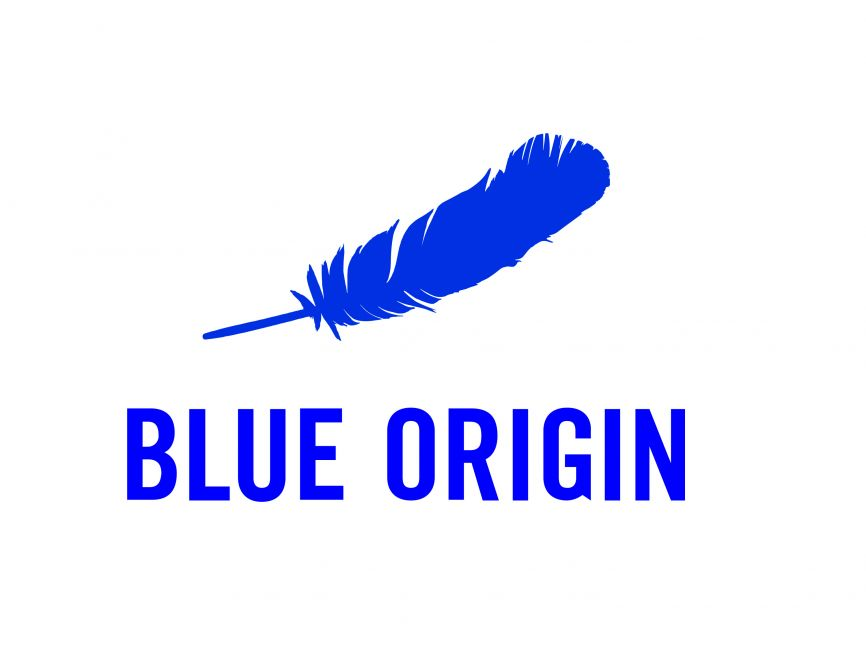

Blue Origin, LLC
Blue Origin is an American aerospace manufacturer founded in 2000 by Amazon founder Jeff Bezos. The company focuses on reusable launch vehicles, lunar landers, and commercial spaceflight.
Overview
Blue Origin develops launch systems designed for cost-effective and frequent access to space. Their motto, "Gradatim Ferociter" (Step by Step, Ferociously), reflects their focus on incremental progress.
Key Achievements
- New Shepard: Reusable suborbital rocket for space tourism.
- BE-4 Engine: Powerful methane-fueled engine used by ULA's Vulcan rocket.
- Lunar Lander: Blue Moon lander selected for NASA Artemis missions.
Current Projects
Blue Origin is developing New Glenn, a large orbital-class reusable rocket designed for heavy payloads, satellite launches, and deep space missions.
Notable Missions
The company has flown multiple crewed flights with New Shepard, sending commercial passengers, researchers, and experiments to suborbital space.